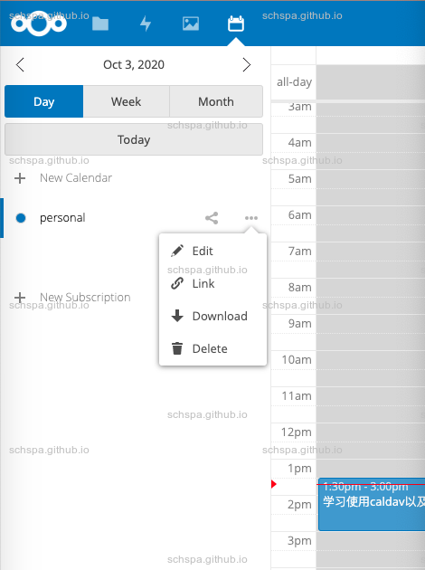

Use org-caldav to sync calendars
Table of Contents
获取caldav链接
以nextcloud为例，打开网页，并进入倒日历选项卡

点击上图中的personal日历的link选项，既可获得链接
下面这个这个就是我自己获取到的链接了（敏感信息已经使用尖括号替换掉了）
https://<SERVER-DOMAIN.com>/remote.php/dav/calendars/<PERSONAL-UUID>/personal/
添加org-caldav设置
配置
;; org-caldav (use-package org-caldav :ensure t :config (unless (file-exists-p (concat my-cache-dir "/org-caldav/")) (make-directory (concat my-cache-dir "/org-caldav/"))) (setq org-caldav-url "https://<SERVER-DOMAIN.com>/remote.php/dav/calendars/<PERSONAL-UUID>") (setq org-caldav-calendar-id "personal") (setq org-caldav-save-directory (concat my-cache-dir "/org-caldav/") org-caldav-backup-file (concat my-cache-dir "/org-caldav-backup.org") org-caldav-show-sync-results 'nil org-caldav-files (mapcar (lambda (x) (concat org-directory x)) '("gtd/homework.org" "gtd/tasks.org"))) (setq org-caldav-inbox (concat org-directory "gtd/inbox.org")))
需要注意，上面填写的org-caldav-canlendar-id是personal，同一个账户可以有多个日历，选择其中一个与orgmode做同步
更新日历
M-x org-caldav-sync
密码认证
在同步时，每次需要认证，都要输入密码, 通过emacs自带的auth source，可以完成自动登录
进阶
测试
emacs-mac主分支上的代码还有BUG，无法通过open-source来打开文件，详见org-protocol://open-source无法打开文件
# emacs-mac use apple script for url handle. open 'org-protocol://open-source?url=gtd%2Finbox.org' # others use emacsclient for url handle emacsclient 'org-protocol://open-source?url=gtd%2Finbox.org' Waiting for Emacs...
正常情况下，当在shell中执行以上命令时，系统会自动打开对应的文件。如果不能打开，则需要检查org-protocal配置
DONE 自动生成org-protocol链接
在导出时icalendar时自动生成打开对应task element的链接
通过org-protocol，自定义gdt的子协议，并且通过org文件节点的ID，可以轻松完成这个操作，由于icalendar的接口没有提供自定义entry的方法，这里对org-icalendar–valarm进行了hook，在添加valarm属性之前，加上rfc5545 URL property URL属性
;; setup icalendar ;; advice to org-icalendar--valarm ;; we need entry argument, so this function is a goog choice. (defun org-gdt-icalendar--valarm (orig-fun &rest args) "Add needed URL entry for icalendar" (let ((valarms (apply orig-fun args))) (concat "URL:org-protocol://gdt?id=" (org-element-property :ID (car args)) "\n" (if valarms valarms "")))) (eval-after-load 'ox-icalendar (progn (setq org-icalendar-include-todo t org-icalendar-use-deadline '(event-if-todo event-if-not-todo todo-due event-if-todo-not-done) org-icalendar-use-scheduled '(event-if-todo event-if-not-todo todo-start event-if-todo-not-done) org-icalendar-with-timestamps t) (advice-add 'org-icalendar--valarm :around #'org-gdt-icalendar--valarm)))
添加org-protocol协议处理函数，自动跳转到对应的task节点
(require 'org-protocol) (defun org-gdt-protocol-open (info) "This handler simply opens the file with emacsclient. INFO is an alist containing additional information passed by the protocol URL. It should contain the id key, pointing to the ID property for a org file to open. Example protocol string: org-protocol://gdt?id=CBEC8DD1-7814-44A7-AA3D-97AEC35B6DB7" (when-let ((id (plist-get info :id))) (raise-frame) (org-open-link-from-string (format "id:%s" id))) nil) (push '("org-gdt-ref" :protocol "gdt" :function org-gdt-protocol-open) org-protocol-protocol-alist)